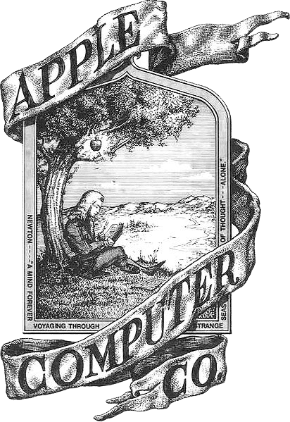
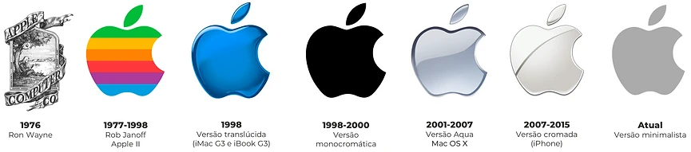

HISTORIA DA MAÇÃ DA APPLE
A maçã mordida da Apple é o resultado de um redesign da marca feito pelo designer Rob Janoff, contratado por Steve Jobs. O desenho foi criado para evitar que a maçã fosse confundida com uma cereja, principalmente em versões menores.
A primeira versão da Logo
A primeira versão do logotipo da Apple não era a maçã mordida que conhecemos hoje, mas sim uma imagem do físico Isaac Newton debaixo de uma árvore. A mudança foi feita pelo designer americano Rob Janoff, contratado por Steve Jobs, em 1977.
O emblema é cheio de detalhes e ostenta, até mesmo, um trecho de um poema escrito pelo poeta romântico inglês William Wordsworth em sua moldura.
Surge uma nova logo
A maçã mordida foi criada em 1977 e o seu sucesso foi instantâneo. O design simples e atemporal da maçã ajudou a Apple a se tornar uma das marcas mais valiosas do mundo.
A mordida na maçã evita que a fruta seja confundida com uma cereja, principalmente quando o símbolo é menor.
Em uma semana o designer apresentou o projeto final ao cliente: uma maçã multicolorida com uma mordida. No processo de desenvolvimento do logotipo, Janoff comprou maçãs em uma loja próxima, colocou-as em um prato em casa, e fez vários esboços tentando se livrar de detalhes desnecessários. Ele decidiu desenhar a maçã com uma mordida para uma balança, para que as pessoas percebessem que era uma maçã, não outra fruta ou baga.